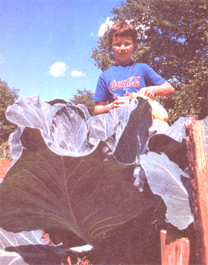

Issue #117 - May/June 1989
MOTHER'S CHILDREN
This 11-year-old gardener uses vitamins as plant foods.
Silver Queen 100 inches tall, and cabbages almost a yard across
Before I started my experiment, I looked for some books or magazines that told of research with plants and vitamins, but I couldn't find anything in print. So I had to find things out for myself. I started off feeding eight plant trays with different vitamin mixes and one plant tray with only water.
I made a table showing the vitamin solutions and water used. I made notes of when all the seeds were planted and when they germinated. I also measured the plants' heights every morning and every night.
The vitamins I used were A (50,000 I.U.), B 1 (200 mg), B 12 (200 mg), B 100 (200 mg), C (1,000 mg), E (400 I.U.) and pantothenic acid (500 mg). I diluted each vitamin with two quarts of water. All of the vitamins except A and E were crushed and dissolved in water. I had to boil water to get the A and E vitamins to melt.
I started the seeds in peat pots, after pouring vitamin water into the dry pots to expand them. I put the seeded pots under a light (I used an old photo-copying stand). All of the plants were put in the same room and kept the same distance from a woodstove that provided heat. I poured the same amount of vitamin water on my seeds every day. I used one tray for each vitamin, one tray that received only water, and another in which I used a mixture of all seven vitamins.
I planted all the seeds early on January 16, and by the next morning, some of the green peas in the pantothenic acid and vitamin E trays had already germinated (I had soaked all the pea seeds overnight before planting). By that night, the pantothenic-tray peas were nearly two inches tall. By January 21, the peas watered with the B 12 mixture not only had germinated but also had well-formed roots coming out the sides of the peat pots. However, the pea plants in the vitamin A tray did not germinate until January 23, and the plain-water peas not until January 27.
By January 3 1, pea plants in the B 12 tray were eight inches tall and had 12 or 13 leaves.
The other peas were only half as tall and had only three or four leaves. But suddenly, those in the pantothenic acid tray started to grow faster. By February 1, they were taller than all the other pea plants.
In other trays, the broccoli grew much faster in trays that were fed vitamins B 12 , C or E. Curled mustard grew well in all of the trays, but it grew fastest and best when fed A, B 12 , B 100 or pantothenic acid. The cabbage grew best in trays fed vitamins A, B, or pantothenic acid (B 100 cabbages grew the slowest).
Tomatoes grew best in B 100 , with B, and pantothenic acid trays close behind. The slowest tomato growth was with A, E and B 12 solutions.
Cauliflower grew best in B 100 vitamin mixture and next best in the E mixture. Pantothenic acid trays grew the slowest.
I was surprised to learn that Brussels sprouts grew better on plain water than on almost any of the vitamin solutions (the plants fed B 100 or C did grow slightly better than the plain-water ones).
I was especially surprised by the corn fed with E and B1.One day I noticed that the corn in the vitamin E tray grew two whole inches. I didn't think this was possible, so I measured it again the next day, and the same
thing happened. Corn in the vitamin B 12 tray grew more than one inch per day. The E and B 12 corn plants were more than twice as tall as the ones in the other trays.
All plants that were fed the seven-vitamin mix grew well.
Next I decided to try vitamins in an outdoor garden. I made up my mind to test them on tomatoes, cabbages, cantaloupes and watermelons. I later added some squash and corn. I mixed all seven vitamins by crushing or boiling two capsules of each and then adding enough water to make a gallon of mix.
I set out 24 tomato plants. Every three days, I poured four ounces of the vitamin solution around the roots of each of 22 of these plants. The other two got only water. At the end of two weeks, the vitamin-fed plants were twice as large as the two fed only water. At the end of the first month, they were over three times as tall and thicker, bushier and healthier.
Then I stopped putting vitamin water on the first 22 plants and started giving it to the two smaller ones. Within two weeks the small plants had caught up with the others (the warmer weather may have helped some). For the rest of the summer, I fed all 24 tomato plants the vitamin food. Each plant stayed strong and healthy. The tomatoes were big and pretty. And they tasted great. (That's what my parents said. I don't like tomatoes.)
Most of the tomatoes were so big they weighed more than a pound. Some days I picked more than 100 pounds of tomatoes. My mother canned these to make spaghetti sauce (which I do like very much).
I fed my 30 cabbage plants the same way-- left two out of my vitamin feedings. At the end of the first month, the plants fed only on water were tiny and weak-looking, while all the others were strong. Then I started giving the weak ones vitamin plant food, too, and soon they caught up with the others.
Some of the cabbage plants were nearly a yard across (counting the outside leaves). The heads were 25 to 30 inches around and weighed from 10 to 15 pounds. The cabbage all tasted great (for cabbage).
In the middle of the summer, I planted some beans and corn. I regularly walked along the rows and poured vitamin water beside the roots of the plants. The Silver Queen corn was very tall (as high as 100 inches) and had really good ears of corn. My family picked several bushels of long and pretty beans off the bean plants.
The garden plants had no bugs or worms on them, and we did not spray or use any kind of insect killers. I read in a magazine once that vitamin B 100 will keep away some insects, so maybe the vitamins kept the bugs off. But we had also built many birdhouses and had lots of birds that helped kill insects.
I didn't have very good luck with the squash plants, because my dogs broke the vines and the plants died. The cantaloupes were very big and very good, but I had more vines than melons, so I'm not sure if my vitamin plant food did them much good. Some of the cantaloupes were eaten by turtles, so I guess my vitamins do not keep turtles away.
The watermelons were big and good, but I got lazy and let the morning-glories take over the patch, so I don't know how much good the vitamins did those plants. I would have tried the mix on peas, but rabbits ate my plants. This winter I might make some rabbit traps and put them in my garden. If I can't eat peas, maybe I can eat rabbit.
From what I saw last summer, I am sure that plants grow faster and stronger and give better crops when watered with vitamin plant food. I did not use any other kinds of fertilizers on the plants, but my family had had a garden in the same place the year before. So there might have been some fertilizer left in the soil from then.
But anyway, it was the best garden we ever had. And I think my plant food should get a lot of the credit.
Editor's Note.MOTHERcannot vouch for the effectiveness of Robert's fertilizing method, so we recommend that interested gardeners try it only on an experimental basis. We'd love to hear your results.
And remember, we're always glad to purchase and publish well-written articles from young people concerning their original projects or small businesses. However, we ask that you query (that is, send us a letter telling about the story that you'd like to do) before writing a full article. Send your queries to Mother's Children, Mother Earth News, P. 0. Box 70, Hendersonville, NC 28793.
|
 |
|
|